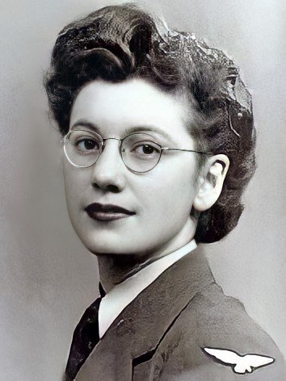

An image of Joan Clarke.
Clarke studied at the University of Cambridge in 1936, achieving a double first degree in mathematics, although she was prevented from receiving a full degree as Cambridge only awarded these to men until 1948. One of her professors at Cambridge noted her mathematical ability and recruited her to the Government Code and Cypher School (GCCS) at Bletchley Park, where she initially undertook clerical work, earning far less than her male counterparts. However, her talents soon shone through and she was promoted to Linguist grade in recognition for her hard work, as there were no protocols in place for a senior female cryptanalyst (despite not knowing another language—much to Clarke's enjoyment when she filled forms in with 'grade: linguist, languages: none'). Working at a time when female cryptanalysts were unheard of, Clarke tirelessly encrypted enemy messages from the German navy in real-time, with her messages resulting in military action being taken almost instantly, therefore saving countless lives from potential U-boat attacks. Unfortunately, Clarke's efforts have been almost forgotten by history, in part due to the secrecy surrounding the work at Bletchley Park, and also as Clarke herself never sought the spotlight, although she was awarded a Member of the Order of the British Empire (MBE), in 1946 in recognition of her work.
More information about Joan Clarke.